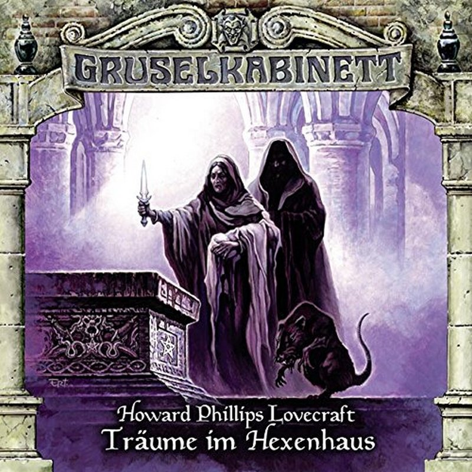

© Titania Medien
Der Student Walter Gilman bezieht ein Zimmer in einem sagenumwobenen Haus in der Stadt Arkham. Im Hexenwahn des späten 17. Jahrhunderts soll dort angeblich Keziah Mason, eine der Hexerei bezichtigten Frau gelebt haben, ehe sie spurlos verschwand...
Hörspiel von Marc Gruppe
1 CD ca. 60 Minuten
Bonus-DVD mit Film-Dokumentation über die Arbeit des Hörspiel-Labels Titania Medien